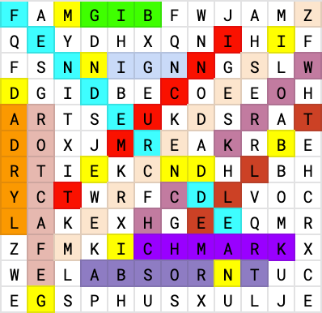
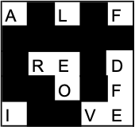

Written by
Kevin Lin & Shuxin Zhan
Art: Melissa Yuan
This puzzle was themed around the multiplayer browser RPG Kingdom of Loathing.
Each mini-puzzle was one of the 6 classes from Kingdom of Loathing and gave a solution that was a made-up move for the new "puzzle hunter" class.
Seal Clubber
The rebuses correspond with animals that are skills from the
seal clubber. Index # of clubs into the skills.
| Number | Rebus Explanation | Rebus Solution | Skill | Index # | Letter |
|---|
| 1 | ORC+A | ORCA | IRE | 3 | E |
| 2 | POTTER-P | OTTER | AUDACITY | 8 | Y |
| 3 | RAIN+DEER | REINDEER | RAGE | 4 | E |
| 4 | SOCK-S | AUK | SCOWL | 3 | O |
| 5 | elon MUSK+OX | MUSKOX | FORTITUDE | 1 | F |
| 6 | W+EASEL | WEASEL | THIRST | 1 | T |
| 7 | WOOL+V+DURENE-D | WOLVERINE | WRATH | 5 | H |
| 8 | PEN+G+WIN | PENGUIN | PRECISION | 3 | E |
| 9 | MOO+SS | MOOSE | MUSK | 1 | M |
| 10 | BELL+OOGA | BELUGA | BUOYANCY | 5 | A |
| 11 | S+NO+L+SHEPARD-SH | SNOWLEOPARD | SEETHING | 8 | G |
| 12 | mrs. PUFF+FIN | PUFFIN | PRIDE | 5 | E |
This gives the answer EYEOFTHEMAGE.
Turtle Tamer
The 7 images are the 7 aspects from the ultimate legendary epic special attack of Turtle Tamers,
Turtle of Seven Tails. This gives you the letters associated with each segment of the 7-segment display (and for the NYTimes Spelling Bee layout).
Then the answers to the clues can be spelled out using NYTimes Spelling Bee rules, and on the 7-segment display they will make letters.
| Clue | Clue Answer | 7-Segment Display | Letter formed |
|---|
| Trifling | MERE | | C |
| Film unit | REEL | | L |
| When I may see you | LATER | | U |
| Primate | LEMUR | | E |
| This puzzle pt. 1 | TURTLE | | G |
| A data structure | TREE | | U |
| Necklace | AMULET | | A |
| It may be dank | MEME | | R |
| This puzzle pt. 2 | TAMER | | D |
This gives the answer, CLUEGUARD.
Pastamancer
The pastamancer clues all have answers containing "Ben" which is the name of all
Vermincellis. In the word search, these answers are all here with "Ben" replaced with a letter.
| Clue | Answer |
|---|
| Backer | BENEFACTOR |
| Determined | HELLBENT |
| German luxury car | MERCEDESBENZ |
| Harmless | BENIGN |
| Like a sponge | ABSORBENT |
| London landmark | BIGBEN |
| Allergy medicine brand | BENADRYL |
| Officeholder | INCUMBENT |
| Small car accident | FENDERBENDER |
| Standard | BENCHMARK |
| Wood workers' table | WORKBENCH |

Reading the replaced letters (highlighted in yellow) in order in the grid yields MINDBENDING.
Sauceror
Solving these Tapas and looking at the letters left over will give a sauce and a number. Associating these sauces with
ranks for the Sauceror and using the number to index into the title (using the part without the sauce) will give a letter, altogether spelling out the answer. The other cells in each Tapas puzzle spelled out some variant on "red herring" by stating a shade of red and a fish, indicating that you should not focus on those.
| 
ALFREDO FIVE
|
SAGE TWO
|
|
CILANTRO TWO
|
CORIANDER ONE
|
|
PARSLEY SIX
|
BAYLEAF THREE
|
|
TARRAGON SEVEN
|
MARINARA ONE
|
|
SESAME SEVEN
|
THYME TWO
|
|
ALLSPICE FOUR
|
ROSEMARY FIVE
|
| Spice | Title | Index | Letter |
|---|
| ALFREDO | ARCHMAGE | 5 | M |
| CILANTRO | SEER | 2 | E |
| PARSLEY | ENCHANTER | 6 | N |
| TARRAGON | THAUMATURGE | 7 | T |
| SESAME | SOOTHSAYER | 7 | A |
| ALLSPICE | ACOLYTE | 4 | L |
| SAGE | SAGE | 2 | A |
| CORIANDER | CONJURER | 1 | C |
| BAYLEAF | BRUJO | 3 | U |
| MARINARA | MAGE | 1 | M |
| THYME | WIZARD | 2 | I |
| ROSEMARY | DIVINER | 5 | N |
This gives the answer MENTALACUMIN.
Disco Bandit
Filling out the dropquotes gives clue phrases that resolve to fictional alcohols in KoL. These are references to real-life alcohols, and filling those in and using the enumerations, we get the answer SEARCHINGSTARE.
| T | H | I | S | | W | I | T | H | | A |
| C | O | C | K | T | A | I | L | | O |
| N | I | O | N | | M | A | K | E | S | |
| A | | G | I | B | S | O | N | | | |
| P | U | T | | A | | B | O | T | T | L |
| E | | O | F | | R | U | M | | I | N |
| N | A | S | H | | C | R | O | S | B |
| Y | S | | S | T | I | L | L | | | |
| P | R | E | M | I | U | M | | B | O | T |
| T | L | E | | O | F | | B | O | O | Z |
| E | | I | N | | A | | T | E | Q | U |
| I | L | A | | S | U | N | S | E | T | |
Accordion Thief
Identifying the stolen accordions using the clues, we use 20% of the selling cost as indexes into the original owners of the accordions to get letters.
| Description | Accordion | Owner | Cost/5 | Letter |
|---|
| This one appears to strongly dislike conflict. | peace accordion | WARHIPPYSPACECADET | 10 | P |
| This one appears to not follow rules by Greek mathematicians. | non-Euclidean non-accordion | CUBISTBULL | 8 | U |
| This one appears to be a non-manual muse. | autocalliope | STEAMPUNKGIANT | 8 | N |
| This one appears to be covered in bat excrement. | guancertina | PERPENDICULARBAT | 3 | R |
| This one appears to be related to a song by The Who. | mama's squeezebox | WERECOUGAR | 2 | E |
| This one appears to be small and charged. | accord ion | HELLION | 4 | L |
| This one appears to originate from Louisiana. | cajun accordion | LIVELYCAJUNACCORDIONIST | 2 | I |
| This one appears to wake people up. | alarm accordion | ALERTMARIACHI | 10 | A |
| This one appears to store many important documents inside. | accordion file | KNOBGOBLINACCOUNTANT | 4 | B |
| This one appears to phase through physical objects. | ghost accordion | SKELETALSOMMELIER | 8 | L |
| This one appears to focus on 1880s French music. | Bal-musette accordion | DEPRESSINGFRENCHACCORDIONIST | 2 | E |
| This one appears to be played by very short people and a small version of a small version of a small thing. | pygmy concertinette | DRUNKPYGMY | 9 | M |
| This one appears to be in the male range and is fairly deep. | baritone accordion | BAR | 2 | A |
| This one appears to focus on the number 5. | pentatonic accordion | NINJASNOWMANCHOPSTICKS | 6 | S |
| This one appears to be skeletal and popular in Argentina. | bone bandoneon | TOOTHYSKLELTON | 5 | H |
This gives the answer PUNRELIABLEMASH.
Final Answer
Inputting each move name will give a response with your damage, the monster’s damage, and a number of ouch sounds. Sorting by the number of ouch sounds and using the damages to index into the move names gives the final answer
MEDIUM RARITY.
| # of ows | Class | Move | Your damage | Your damage letter | Monster damage | Monster
damage letter |
|---|
| 1 | Accordion Thief | PUNRELIABLEMASH | 12 | M | 4 | R |
| 2 | Disco Bandit | SEARCHINGSTARE | 14 | E | 3 | A |
| 3 | Turtle Tamer | CLUEGUARD | 9 | D | 8 | R |
| 4 | Pastamancer | MINDBENDING | 2 | I | 9 | I |
| 5 | Sauceror | MENTALACUMIN | 9 | U | 4 | T |
| 6 | Seal Clubber | EYEOFTHEMAGE | 9 | M | 2 | Y |
Author’s Notes
The theme of this puzzle was conceived starting with the desired answer of MEDIUMRARITY. This answer lended itself
well to a theme about steak (rarities of meat), which in turn led to Kingdom of Loathing (KoL), a game that
interestingly uses meat as currency. (This is apparently to parody/highlight the strange phenomenon where enemies in
video games always drop currency, even when it makes no sense for them to carry currency.)
We ended up deciding on the format of this puzzle as mini-puzzles as it is a round 1 puzzle, and mini-puzzles tend to
be more approachable and easier to find areas to make progress on. Even if solvers got stuck on one or two of the
mini-puzzles, having enough of them solved would be enough to progress and eventually solve the puzzle. It also let us
showcase a bunch of common puzzling techniques and structures. (This was before round 3 was created, so sorry if it felt
like there were a lot of mini-puzzle puzzles!)
Originally, we worked from the wordplay and intended the title of the puzzle to be "High Steaks/High Stakes," and so
the puzzle's parts were planned around the activities in KoL's Casino. The original mini-puzzles of the first iteration,
however, were weakly themed and difficult, largely because theming around a very niche part of a somewhat niche game
didn't give much material to work with. We eventually shifted the theming to a more central part of the game, the 6
classes, and ended up scrapping the original puzzles over iterations. The resulting mini-puzzles stuck much closer to
the central theme and were more approachable, usually by just having 1 or 2 small "aha"s in each mini-puzzle. This
unfortunately led to some great puzzle ideas being shelved, like a poker logic puzzle and a pirate coin dilemma puzzle -
but maybe they'll come back some day.
To tie the mini-puzzles together, we decided to theme around fighting a puzzle monster using thematically silly
puzzle moves for a "Puzzle Hunter" class. This gave some context to the theming of mini-puzzles around character classes
(each class would help out the puzzle hunter by teaching them a move to use) and also gave us an opportunity to have our
artists make some beautifully thematic stick-figure art.
This puzzle ended up definitely being a bit longer than some of the other round 1 puzzles, but solve-times showed it
was reasonably in line. Ideally teams could solve without needing to solve all the mini-puzzles (ideally 4-5 would be
enough to extract, 3 for clever guessers). The hardest puzzle of the set was definitely Turtle Tamer, which had a
seven-segment display for extraction, which threw some teams off, and Accordion Thief, whose "20% of sales" made for
some difficulty in finding appropriate indices.
As a final side note, the move input dialogue box (mini-puzzle checker) was a good source of early action and funny
inputs throughout the hunt and provided some great entertainment.